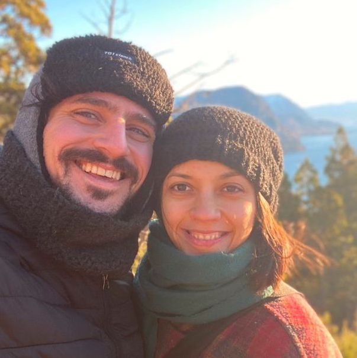
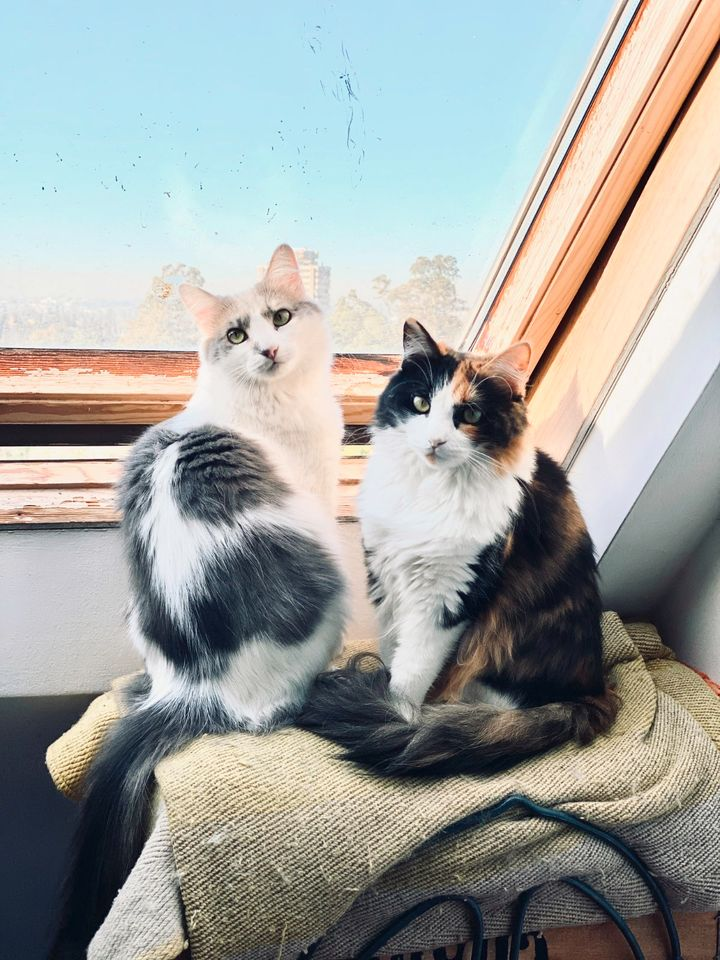

Berenice and Federico in San Martin de los Andes, Neuquén, Argentina
We are Berenice and Federico, a couple of 34 year-old freelance Argentinian composers/artists with two lovely cats 🐈 🐈 💕, looking for the long term lease of our beloved, bright, warm, quiet, and ample place in Berlin with Anmeldung, starting September/October. What a dream!
Feel free to go through our documents for more information, but our budget is comfortable: we have enough savings for a year and we estimate a total income of around 3.000 - 4.000 euro per month between the two.
Here, we would like to introduce ourselves so that you can briefly get to know us, our cats, why we came to Berlin, and what we want to do here.
We came to Germany to start a new life, and Berlin has been a common goal between us since day one. Our first conversation as a couple had Berlin all over. Bere had visited this city on vacations in 2017 and discovered a new world that changed her career towards electronic experimental music. Fede lived there in 2018 for a year, and swore he would come back again. When they first met, Bere and Fede were both talking about the same thing: how Berlin changed their life. A few months later, they found themselves in love and already making plans together.
These plans, however, changed drastically with the COVID-19 situation.
It was early March 2020 and Fede was hopping on a plane from Ohio to Madrid for a conference. He wrote a blog post about it, but the gist is that he was to end his trip with a week-long visit to Buenos Aires, where he would meet with Bere. During that week, president Alberto Fernández declared an emergency state due to the CORONAvirus. Fede lost his flight; weeks turned into months; months turned into years. His postdoc was finished online, but beautiful things happened in the meantime: Bere and Fede moved in together, adopted Elektra (and then Panchita), and became a happy, interspecies family. It was during this time that Berlin grew stronger and stronger in their hearts.
They also began playing together as a duo called toros. Check it out if you are interested: fdch.github.io/toros.
That is why they decided to apply for a Freelance visa for artists in Berlin. In early 2020, they began gathering letters, documents, papers, anything they could find to have everything ready for their interview in July that year. So many dear friends and acquaintances helped them through the process. It was such a nice gift to receive positive energy from many people across the Atlantic. It gave them hope. They are extremely greatful for this :)
The interview lasted 20 minutes, but the visa was not to be issued until much, much later. Bureaucratically, the German office in any place outside Germany can only issue a short-term, 3-month visa for people to come to Germany and process the longer residence permit. That is the case for us. But, the waiting times only read: "at least 90 days". The young couple thought to themselves, "3 months is not that bad", but that was only the beginning. Three months passed and still no answer. Four, five months passed, still no answer... Such waiting made them wonder, "could they have denied our request?". Six months passed and the world shuddered with war, and still no response. The couple figured their situation was taking a bad turn, so they sent an email. The blunt, automated reply explained that a process was taking place and that its duration was indefinite. While poetically pleasing, the couple grew impatient. At that point, they decided to take a trip to Bariloche, to drown their sorrows in hot chocolate, magnificent views of pristine lakes, and surround themselves with the Cordillera de los Andes. The day after they had booked their trip to the south of Argentina, 7 months into their waiting time, their inbox rang with a one-liner: 'visa ready, this message will self-destruct in 5, 4, 3...' something of the sort. They had less than two weeks to bring their passports to the German office to get the temp visa that they have now. Then, they went to Bariloche.
Elektra is our first kitty. She is a tricolor, audacious explorer, with a tendency to require her own space, but with a tender and playful nature. She is analytical, and pays close attention to everything. She is quite clever, but also stubborn, so she won't stop doing whatever annoys you most until she's managed to get your attention. She's an early breaker, demands her food at 7am sharp, and is on her own most of the day. She's always lived inside our apartment, but we've been taking her out lately and she is loving it.
Panchita used to be Elektra's slightly younger aunt, because Fede's mom adopted her after they'd adopted Elektra. From their early youth, they've moved from Panchita's to Elektra's and vice versa, on occasions staying together for weeks. So, they take care of each other, play together, eat together, and do everything in almost symmetrical ways. But, they have completely different personalities. Panchita, who has been with us since May 2022, was very nervous at first. We were supposed to keep her until we'd found another place for her, but we just loved her and could not leave her. Panchita is a hunter, fast, swift, and elastic as no other cat. She's white and gray, and quite elegant. At first, she was somewhat afraid of humans, being moved from home to home, and bit us often, but she's adjusted perfectly now. She stopped biting, and she's just a sweetie pie, purring her way through our hearts.
Berenice is a composer and a DJ. She works independently in different artistic research projects while developing her personal work. Her music was performed in several international music festivals (MUTEK Montréal, Now Net Arts, NY). She has been doing music production for other artists since 2020.
Check out her work here: berenicellorens.github.io
Federico is an artist as well, a composer coming from academia, and he is also a programmer. He has lived and studied in New York (PhD at NYU, 2013-2019) and worked in Ohio (Postdoc at OSU, 2019-20). For over 10 years, he has been developing new music and audio programming tools. His latest projects include cutting-edge machine learning research for audio. He also homebrews a blog where he blabs about things.
Check out his work here: fdch.github.io
We want to find a beautiful place to live, to take care, and to start our lives in this great city. We hope that this presentation can serve as an introduction of your next tenants.
Please, let us know if you need more information from us.
Viele Grüße,
Berenice, Federico, Elektra and Panchita =)

Elektra and Panchita in Córdoba, Argentina